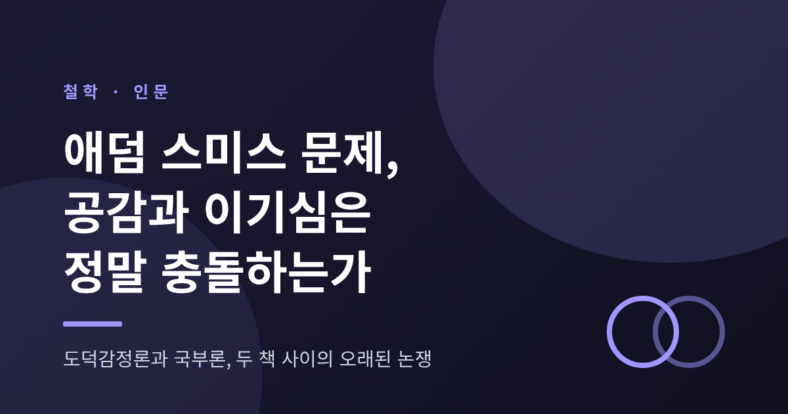
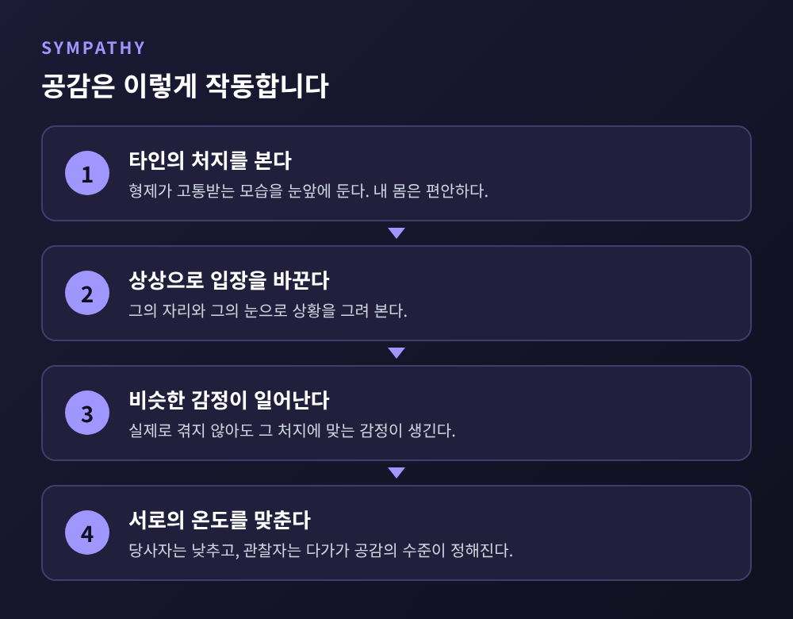
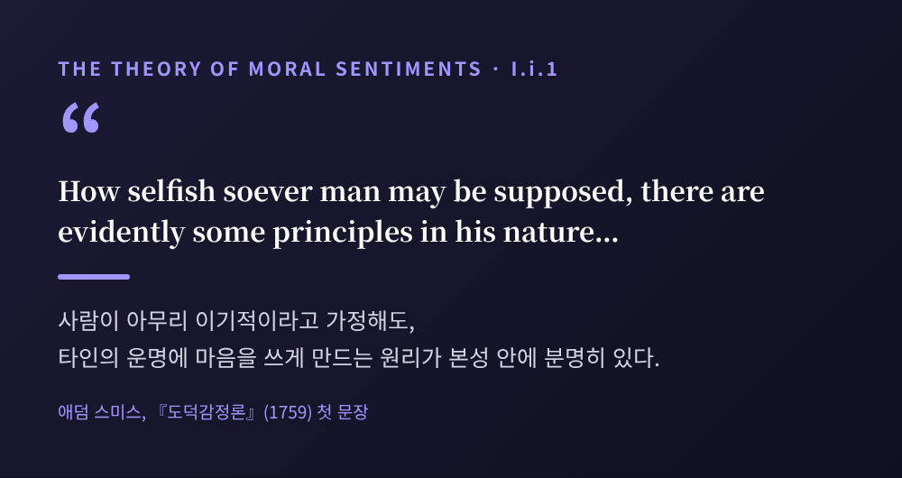
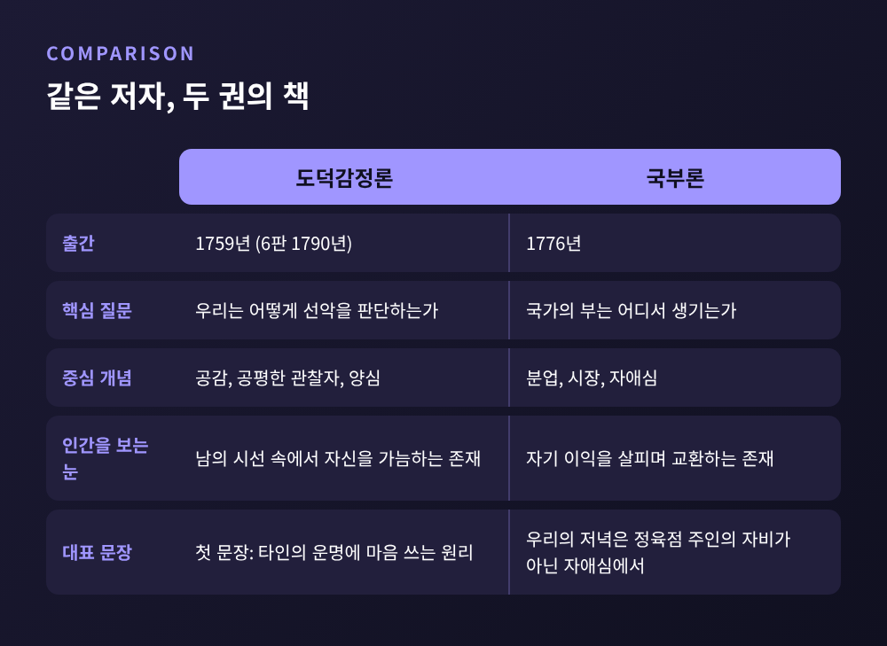
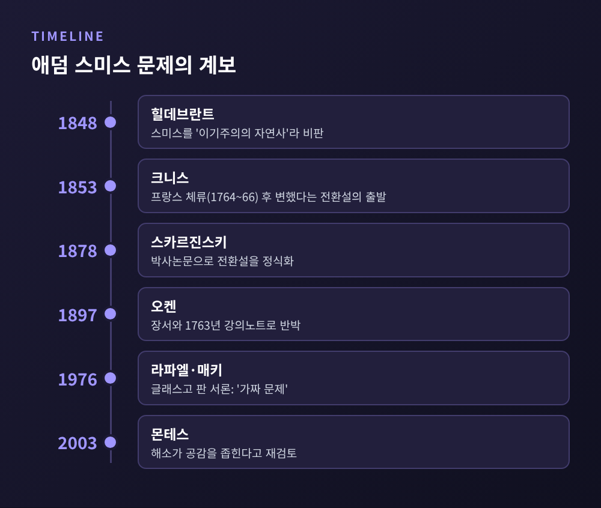
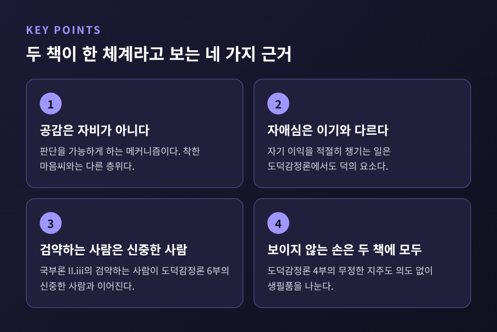
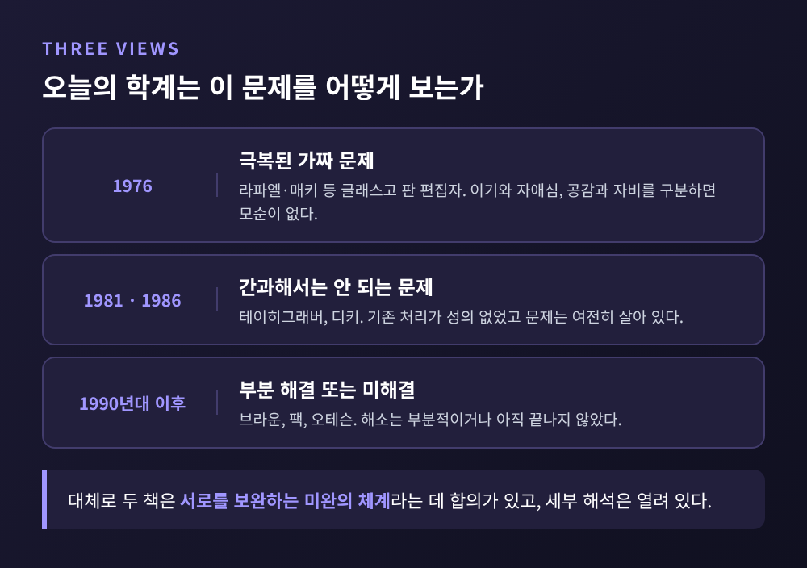

도덕감정론의 공감과 국부론의 이기심, 두 책 사이의 오래된 논쟁을 따라가 봅니다
오늘은 애덤 스미스의 『도덕감정론』과 『국부론』이 서로 모순인지를 다룬 '애덤 스미스 문제'에 대해 이야기해 보려 합니다. 한 사람이 공감을 말하는 책과 이기심을 말하는 책을 함께 썼다는 점이 논쟁의 출발점이었습니다. 결론부터 적으면, 오늘날 연구자들은 대체로 두 책을 하나의 체계로 읽습니다. 다만 그 근거와 남은 쟁점이 흥미롭습니다.
『도덕감정론』은 1759년에 처음 나왔습니다. 스미스가 글래스고대 도덕철학 교수였던 시기이고, 책은 그의 강의에서 자라났습니다. 첫 문장부터 눈길을 끕니다. 사람이 아무리 이기적이라고 가정해도, 타인의 운명에 관심을 두고 그의 행복을 자기에게 필요한 것으로 느끼게 하는 원리가 본성에 있다는 선언입니다.
그렇다면 그 원리는 어떻게 작동할까요. 스미스의 설명은 의외로 건조합니다. 형제가 고문대 위에서 괴로워해도, 우리 자신이 편안한 동안에는 감각이 그의 고통을 알려주지 않습니다. 그래서 우리는 상상으로 그의 처지에 자신을 놓아 봅니다. 공감은 이 상상 속 입장 바꾸기에서 나옵니다.

여기서 흄과의 차이가 드러납니다. 스탠퍼드 철학 백과는 흄의 공감을 감정이 옮아가는 '전염'형, 스미스의 공감을 상상으로 쏘아 보내는 '투사'형으로 구분합니다. 투사이기 때문에 상대가 실제로 그 감정을 느끼지 않아도 공감이 가능합니다. 스미스가 든 예가 인상적입니다. 죽은 이, 어린 유아, 정신이 온전하지 않은 사람입니다. 정신이 온전하지 않은 사람은 웃고 노래하며 자기 처지의 비참함을 알지 못합니다. 그래도 우리는 그의 처지를 상상하며 슬퍼합니다.
공감은 한 방향으로 끝나지 않습니다. 스미스는 다른 사람이 자기 감정에 보조를 맞춰 줄 때 그보다 더 큰 기쁨이 없다고 썼습니다. 그래서 당사자는 구경하는 사람이 따라올 수 있는 수준으로 감정의 온도를 낮추고, 구경하는 사람은 당사자 쪽으로 다가갑니다. 스탠퍼드 철학 백과는 이 상호 조율의 과정에서 도덕 규범이 생겨난다고 정리합니다.

공감이라는 말을 들으면 따뜻한 마음씨를 떠올리기 쉽습니다. 그러나 스미스의 공감은 자비(benevolence)가 아닙니다. 케임브리지 스미스 안내서의 해당 장은 공감을 "행위의 적절성을 평가하게 하는 도덕 판단의 메커니즘"으로 규정합니다. 마음이 착해서 생기는 감정이 아니라, 판단을 가능하게 하는 장치라는 뜻입니다.
1976년 글래스고 판 편집자 라파엘과 매키는 이 점을 더 정밀하게 설명했습니다. 흄에게 공감은 행위가 낳은 쾌락과 고통을 함께 느끼는 것입니다. 스미스에게는 어떤 감정이든 나눌 수 있습니다. 은혜를 베푼 사람의 공적을 판단할 때에는 행위자의 동기에 공감하고, 은혜를 입은 사람의 감사에도 공감합니다. 이른바 '이중 공감'입니다.
공감에는 한계도 있습니다. 스미스는 우리가 슬픔보다 기쁨에 훨씬 쉽게 공감한다고 보았습니다. 슬픔은 고통스러워서, 우리가 그것을 떠올리지 않거나 떨쳐 내려 하기 때문입니다. 부자의 기쁨은 따라가면서 가난한 이의 슬픔은 외면하는 경향도 같은 뿌리에서 나옵니다. 스미스는 부자는 재산을 자랑하고, 가난한 사람은 가난을 부끄러워한다고 적었습니다. 6판(1790)에는 이 감탄의 성향이 도덕감정을 부패시킨다는 새 장이 추가됩니다. 공감이 곧 도덕적 정답을 보증하지는 않는다는 점을 스미스 스스로 인정한 셈입니다.
1776년의 『국부론』에는 유명한 대목이 있습니다. 우리가 저녁 식사를 기대하는 것은 정육점 주인과 양조장 주인, 빵집 주인의 자비심 때문이 아니라는 문장입니다. 또 다른 대목에서는 그들의 인류애가 아니라 자애심에 호소해야 한다고 말합니다. 경제학자 스티글러는 『국부론』을 "자기 이익이라는 화강암 위에 세워진 거대한 궁전"에 비유했습니다. 케임브리지 안내서가 소개하는 평가입니다.
『도덕감정론』의 공감과 『국부론』의 자애심을 나란히 놓으면 한 저자가 인간을 두 가지로 그린 것처럼 보입니다. 이 의심이 '애덤 스미스 문제'입니다.

이름부터 독일어(Das Adam Smith Problem)입니다. 몬테스의 2003년 논문에 따르면 배경에는 영국의 경제적 우위가 있습니다. 독일 학자들에게 스미스는 영국 이익을 대변하는 자유무역의 창시자로 보였습니다. 1848년 브루노 힐데브란트는 스미스의 경제학을 '이기주의의 자연사'로 만들려는 시도라고 비판했습니다. 1853년 카를 크니스는 스미스가 프랑스에 머문 1764~66년 이후 생각이 바뀌었다는 이른바 '전환설'의 문을 열었습니다. 1878년 비톨트 폰 스카르진스키가 이를 박사논문으로 정식화했습니다. 스미스가 허치슨과 흄 곁에서는 관념론자였다가 프랑스에서 유물론자가 되었다는 주장입니다.
이 주장은 1930년대 말까지 영향력을 유지했습니다. 다만 최초 제기자가 누구인지는 자료마다 서술이 다릅니다. 오켄은 힐데브란트가 먼저 문제를 제기했다고 쓰고, 애덤스미스웍스는 크니스가 첫걸음을, 스카르진스키가 정식화를 맡았다고 정리합니다. 어느 쪽이든 1848년에서 1878년 사이 독일에서 이 논의가 자랐다는 점은 같습니다.

전환설은 예상 밖의 곳에서 무너집니다. 1897~98년 아우구스트 오켄은 사실 관계로 반박했습니다. 스미스의 장서 목록에는 엘베시우스의 저작이 없고, 스미스는 어느 판에서도 엘베시우스를 거명하지 않았습니다. 결정적인 것은 1896년 캐넌이 펴낸 1763년 강의노트입니다. 스미스가 프랑스로 떠난 1764년보다 앞선 기록인데, 이미 『국부론』의 자애심 교설이 들어 있습니다. 프랑스에서 사상이 바뀌었다는 설명과 시간표가 맞지 않습니다.
또 스미스는 프랑스에서 돌아온 직후 준비한 3판(1767)에서도 맨더빌과 라로슈푸코의 이기심 이론을 '방종한 체계'라고 비판했습니다. 생애 마지막 해인 1790년에 낸 6판 광고문에서는 법과 통치에 관한 약속을 『국부론』에서 "부분적으로 이행했다"고 밝혔습니다. 스미스 자신이 두 책을 이어진 기획으로 보았다는 증거입니다.
1976년 글래스고 판 서론은 이것을 "무지와 오해에 기댄 가짜 문제"라고 선언했습니다. 핵심 논거는 세 가지입니다.
첫째, 스미스는 비난조의 이기(selfishness)와 자애심(self-love)을 구분했습니다. 자기 이익을 적절히 챙기는 일은 『도덕감정론』에서도 덕의 한 요소입니다. 둘째, 『국부론』의 검약하는 사람은 『도덕감정론』 6부의 신중한 사람과 이어집니다. 셋째, 공감은 자비가 아니라 판단의 메커니즘이므로 이기심과 같은 층위에서 맞서지 않습니다. 편집자들은 "본질적으로 두 책은 하나"라고 결론 내렸습니다.
흥미롭게도 '보이지 않는 손'은 『국부론』에만 나오지 않습니다. 『도덕감정론』 4부에는 오만하고 무정한 지주가 등장합니다. 그는 땅의 수확 전부를 혼자 먹으려 하지만 위장은 농부와 다르지 않아서, 대부분을 요리사와 건축가, 장인에게 나눠 주게 됩니다. 의도하지 않았는데도 보이지 않는 손에 이끌려 생필품이 고르게 퍼진다는 이야기입니다. 이 대목은 두 책이 같은 관찰에서 나왔음을 보여 주는 정황으로 읽을 수 있습니다.

그렇다고 논쟁이 끝난 것은 아닙니다. 몬테스는 논쟁의 단계를 세 가지로 나눕니다. 라파엘과 매키 등 1970년대 연구자들은 '극복되었다'고 보았습니다. 1980년대에 테이히그래버는 기존 처리가 성의 없었다고 평하며 재검토를 요구했고, 디키는 문제가 "여전히 살아 있다"고 썼습니다. 이후 일부는 부분적 해결에 그치거나 미해결이라 봅니다. 몬테스 자신은 라파엘과 매키의 해소가 공감을 도덕 승인으로만 좁힌다고 비판하며, 공감이 행동의 동기와 성향이기도 하다고 주장합니다.

정리하면 이렇습니다. 스미스가 말한 도덕 판단은 이성의 계산도, 단순한 자비도 아닙니다. 상상으로 남의 자리에 서 보고, 그 마음을 내 감정과 견주고, 구경하는 사람이 함께할 수 있는 수준으로 서로를 맞추는 과정입니다. 이 과정이 안으로 들어오면 '공평한 관찰자'가 되어 내 행동을 스스로 되돌아보게 합니다. 이웃의 칭찬을 얻으려는 사람보다 칭찬받을 만한 사람이 되려는 사람이 더 덕스럽다는 것이 스미스의 위계입니다.
물론 한계는 분명합니다. 감정에 기댄 판단이어서 사회의 편견이 스며들 수 있다는 비판이 스탠퍼드 철학 백과에도 실려 있습니다. 두 책의 관계를 둘러싼 해석도 하나로 모이지 않았습니다. 오늘날 합의는 두 책이 서로를 보완하는 미완의 체계라는 정도입니다.
끝으로 한 마디만 더 드리겠습니다. "공감은 시장의 반대편에 있지 않고, 시장 안의 사람을 이해하는 출발점이었다." 시장에서 거래하는 사람도 결국 남의 시선 속에서 자기를 가늠하는 존재라는 뜻입니다. 정육점 주인에게 저녁을 기대할 수 있는 사회가 그저 이기심만으로 돌아가는지 물으신다면, 스미스는 아마 고개를 젓지 않았을까 생각합니다.